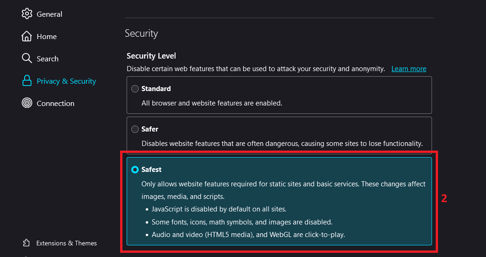
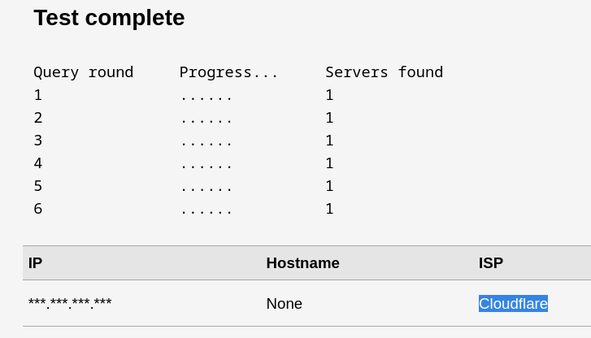

- Go to browser's Settings -> Privacy & Security
- Enable Always use private browsing mode & Safest mode in Security if its off


24 Aug, 2024
Disclaimer: This article is for educational purposes only. It is not meant to promote or encourage misuse of privacy tools. Readers are responsible for how they use this information.
TL;DR: This article is a simple guide that will help individuals understand and achieve different levels of online privacy and anonymity easily.
Hello World, in today's interconnected world, nearly everything we do is linked to the internet. This connectivity allows large corporations and governments that dominate this digital space to monitor and record almost every online activity. All of this data, once collected, is stored somewhere, creating the risk of it being breached or used against us.

We might accept some level of data collection, it's crucial to recognize that personal, private details of our lives—things we often take for granted—are also being gathered and stored, often without our knowledge.
While many websites use this data for personalized advertisements, to sell to data brokers, or to enhance customer experiences, not all websites have good intentions. Some might misuse our data for malicious purposes.
Everyone has some expectation of privacy. We don't want to indiscriminately share every single aspect of our lives with everyone else. And the fact that you are on this page means you already do care or are eager to learn more.
When you visit a web page, your browser sends various types of information to the web server, which can be used to identify and track you. This information includes:
If this information falls into the wrong hands, it can lead to tracking, fingerprinting, exploitation, or privacy breaches, all of which pose significant risks.

This guide aims to help people stay anonymous online without compromising their security and privacy by understanding the different layers of privacy, ranging from simple to complex.
We need to understand that Privacy and Anonymity both has different meanings:
So lets go through different levels of measures you can take for getting more secure online...
(Simple, Secure and Basic privacy measures)
If you're knowledgeable about internet privacy and anonymity, then you already know that this is a no brainer. Surfing the web using your own internet connection is almost like giving your real name and address to random people you meet on street. Even using VPN or Proxies can be considered risky, as your real IP address is still visible on the other end, posing a risk of compromise.
So, connect to the internet via someone else's router (a cafe or another home for example). The worst-case scenario, if they trace your IP, is they will only know "it was someone connecting from this cafe or home".
NOTE: Always be cautious about which Wi-Fi network you connect to. Avoid connecting to any random public Wi-Fi, as it may expose you to risks like packet sniffing, data capture, and man-in-the-middle (MITM) attacks.
So make sure you're connecting to secure Wifi.
Virtual private network (VPN) acts as an intermediary between the user getting online and connecting to the internet by hiding their IP address. Using a VPN creates a private, encrypted tunnel through which a user's device can access the internet while hiding their personal information, location, and other data.

Following are some well known and secure VPN services you can use:
>>> Mullvad ⭐
[ Windows | Linux | Android | macOS | iOS ]
>>> ProtonVPN ⭐
[ Windows | Linux | Android | macOS | iOS ]
>>> IVPN
[ Windows | Linux | Android | macOS | iOS ]
here's a usefull VPN comparision post btw:
>https://www.reddit.com/r/vpns/comments/171h9qa/list_of_recommended_vpns/here's a cool VPN relationship map:
>https://kumu.io/Windscribe/vpn-relationshipsNote: A VPN does not make you anonymous, it simply masks your public IP address by replacing it with the VPN provider's IP address instead of your ISP. Your browsing session can still be traced back to your real identity process known as fingerprinting.
DNS, or Domain Name System, is a fundamental part of how the internet works. It acts as the internet's phonebook, translating human-readable domain names (like www.google.com) into IP addresses (like 172.217.10.46), which computers use to identify each other on the network.

Without using a secure, privacy-centric DNS all your web requests can be seen in the clear. You should configure your DNS queries to be managed by a service that respects privacy and supports DNS-over-TLS, DNS-over-HTTPS or DNSCrypt.
By default, the DNS server your devices use is provided by your Internet provider. To start using custom DNS queries, you will need to change the DNS settings in your device or router.

Setting up DNS queries:
>>> Windows:
>>> Linux:
nmcli connection show
nmcli connection modify your-connection-name ipv4.dns "1.1.1.1 1.0.0.1"
nmcli connection down connection_name && nmcli connection up connection_name
example:

DNS leak test:
These commands sets your DNS to use Cloudflare's servers (1.1.1.1 and 1.0.0.1) You can replace these addresses with other DNS servers of your choice.
>>> Android:
Following are some well known and secure DNS service Providers you can use:
>>> CloudFlare ⭐
>>> NextDNS ⭐
>>> Quad9
>>> AdGuard
>>> 1.1.1.1 Warp (App for Android and iOS)
The web browser is the most important tool for internet browsing. It's also one of the most important tools for our privacy and security. A secure web browser can protect your personal information, passwords, and browsing habits from hackers and government surveillance.
There are many reasons why you should care about your web browser:

With the increasing number of cyber-attacks and data breaches, it is essential to have a secure browser or to make your current browser secure.
When you visit a web page, your browser automatically shares information about its configuration, such as available fonts, browser type, and installed add-ons. If this combination of details is unique, it can potentially be used to identify and track you without relying on cookies. Even if you use a secure browser, it might still be vulnerable to leaking data on malicious websites.
To see what personal identity data your browser might be leaking visit:
>https://browserleaks.com/To check what your browser is currently leaking, visit:
>https://ipleak.net/So choosing browser is essential, you cannot be using chrome and think you are secure even with VPN...
Here's an illustration I made showing which browser you should prefer based on your needs:
>>> "normal" teir browsers
These browsers are good for normal day-to-day usage. Need to be configured before, for making them privacy focused and secure. Install the recommended extensions btw.
>>> "better" teir browsers
These Browsers are more lightweight, secure and faster in general. Might need extensions
>>> "best" teir browser (?)
This browser provides enhanced privacy, anonymity, censorship circumvention, multi-layered encryption and block trackers. And you can dvelve deeper into the internet using this (which are inaccessible with normal browsers). However, it all comes at a cost of network speed, so might not be suitable for normal usage :/
some extensions/addons that are important (or you might be bombarded with ads and scripts)
Now that you have a basic understanding of how to surf the internet more "privately" without directly compromising your personal data via browser, internet, or DNS leaks, you can achieve a basic level of anonymity. By using secure browsers, masking your IP, and opting for secure DNS providers, you can take the first steps toward protecting your online privacy.
(Advanced Privacy & Anonimity Measures)
Tor works by routing your internet traffic through volunteer-operated servers, instead of making a direct connection to the site you're trying to visit. This obfuscates where the traffic is coming from, and no server in the connection path is able to see the full path of where the traffic is coming from and going to, meaning even the servers you are using to connect cannot break your anonymity.

When you connect to a website using Tor, your connection is routed through at least three randomly selected Tor nodes (also called relays)
Using the Tor Browser:
What happens: Your web traffic is encrypted and sent through several Tor relays (nodes) before reaching the destination. This process hides your IP address and location from the websites you visit.
You can also check your Tor Circuit on the top left corner
Enhancing TOR security:
It's recommended that you make an effort to hide your IP address before connecting to the Tor network. You can do this by simply connecting to a VPN (through a client installed on your computer) and then accessing Tor as normal, through Tor Browser for example.
This creates a connection chain like: You → VPN → Tor → Internet
✅ Recommended combination:
❌ NOT Recommended combinations:
here's an Advanced overview on tor:
>https://www.privacyguides.org/en/advanced/tor-overview/